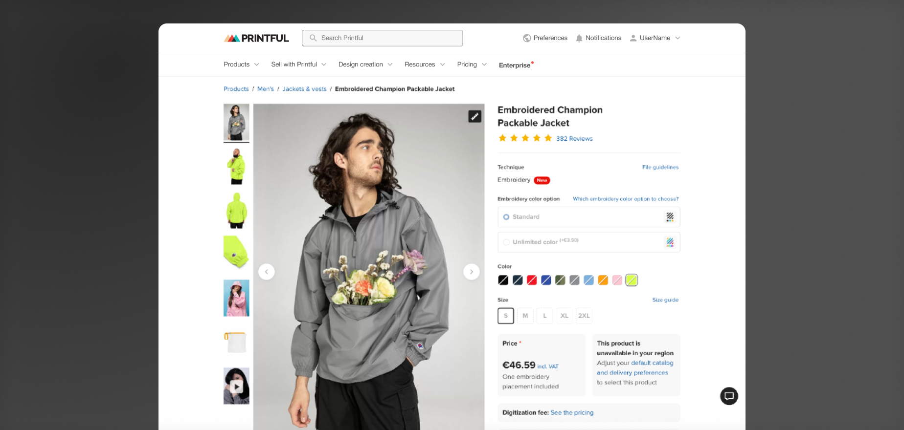
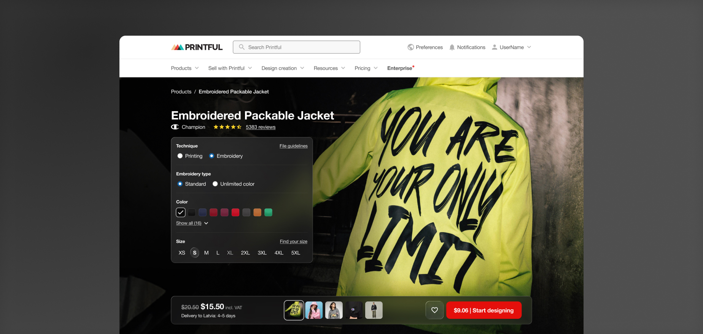
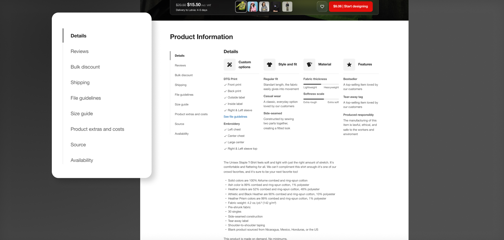

Open Product Page
Project for Printful
Launched

Project for Printful
What is Printful? Printful is a print-on-demand and dropshipping company that helps businesses and individuals sell custom-designed products online. Items can be customized by the seller while Printful handles production and shipping, allowing sellers to forget about inventory or fulfillment logistics.
The open product page is one of the most important areas of the Printful CX. This is where users make decisions about the products they are going to sell. The biggest challenge here is translating the properties of a physical product into a digital environment.
It's important to make users feel how the product is in real life and determine if it's something they would like to offer their customers.
The old Printful product page was functional, but generic. Images were small, and important details were hard to find in a maze of tabs and accordions. Users found it difficult to locate necessary details such as shipping information and size guides. More importantly, the page failed to inspire users to make something unique - the page acted as just information, not a source of creativity.

Before starting the project, it was important to understand how success would be measured. It was split into two parts: the conversion rate (what percentage of users proceed to the design step) and interaction with various product options. This would be run as an A/B test to compare the results with the existing page.
New concept: Image is king. The new concept of the open product page goes as follows - images are the most important piece here. Big and inspiring, showing sellers HOW the product would look and feel in real life, with closeups, real photography, and modern, inspiring designs. The controls are just as important, but out of the way when not needed, and right there when they are - floating on top of the image, nested on a piece of digital glass. And I know what you're thinking, but we actually did this at least 2 years before liquid glass. Talk about predicting the future!

But just as importantly, we wanted to redesign the product description area, with the concept being linear information. Instead of details being hidden in tabs, accordions, etc., information would be fully laid out right away and stacked in vertical blocks. The main piece of the puzzle was a sticky navigation on the left side, which always acts as a guide between those sections. This way, you could quickly click on what you want to find and be scrolled directly to that info. Because information is not hidden behind accordions and modals, users could also find what they needed using the browser's search functionality.

To make sure we weren't delivering just a beautiful, Dribbble-worthy UI, but something users would actually find easy to use, we went through rigorous testing with users. First, we gathered information about what users use our product page for and what their pain points were. This was done by talking with customers, but more importantly, by checking data and Hotjar recordings (this revealed their real intentions and how much time is actually spent there).
We made lots of design variations, exploring everything from reasonable fixes to the existing product page, to crazy, out-of-the-box concepts. Everything was designed to work well on all device types.
And then came the testing - we did usability testing with many of our users all around the world, checking how they interacted with the new design.
Overall, users were able to finish all of their tasks with ease, though there were some things that we had to change for good. Interestingly, a few of our users mentioned not seeing that big of a difference compared to the old product page, which indicated to us that even though the changes were big, users still felt right at home.
Mainly, the hardest part was front-end development - it was a heavy task for our developers, but they did an amaaaazing job bringing our vision to life.
Fitting all of the details of Printful's products was no easy task either; we had to play around with the glass panels a lot so everything fits. Another big hurdle was images - very few of our library images were big enough to fit full screen, but with some Photoshop magic, it wasn't a problem.
But the hardest hardest part was accessibility. To make sure everything is readable, we experimented a lot with the blur and color of the glass panels, but most importantly, the text had to be dynamic and adjust its brightness based on the image for optimal contrast.
The launch was successful! The new Printful product page was launched in 2024 and was a big hit internally that was often talked about.
Even though we achieved our goal of higher conversions and more product exploration, the increase was small enough that it didn't make financial sense to redo all the pages for other products. Eventually, the project was discontinued and all product pages returned to the old design.
This project tested my and our developers' technical limits to the highest standards -it was a difficult project to build, but the result was worth it. I'm happy that we tried it, and even though it was discontinued, some parts of it still keep living.
The data and insights we gathered during this project will help designers work with these pages in the future.